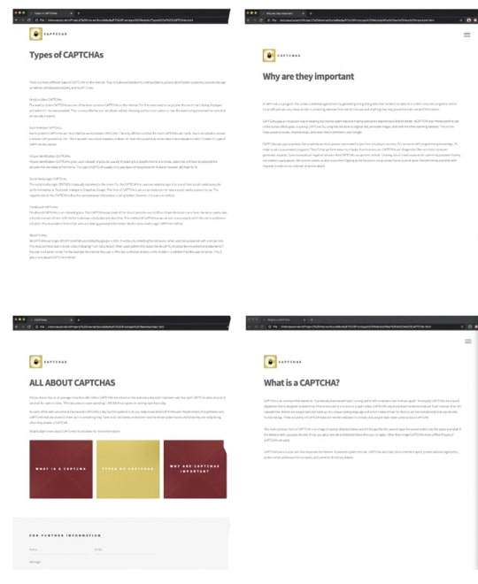

Journal Entries
Here I have recorded my development progress for Project2
02/09/2020 - Planning
Today I got my head around what I needed to do for Project 2 and I made a rough plan and researched the stuff I needed to do (how to make a captcha tutorial videos). I posted this to the journal on blackboard. I then downloaded the template I wanted to make my informative website on from html5up.net. After having a good look at all the other templates I decided that I wanted to use the same template as Project one as that best described my theme and was the most interactice website I could find. However, I did choose to download it again and start from scratch again
04/09/2020 - Wireframing
I started wireframing looking getting an idea of how I wanted things to look. Wireframing has helped me in the past to get a better understanding of what I wanted to achieve and also I allowed me to plan out everything I needed to do.
05/09/2020 - Layout of Website (Prototype1)
I started editing the template I downloaded for the informative website prototype. I got all my basic layout done of how I want things to look which meant that I added colour, logo, and more webpages. I really wanted to add more website pages for project one but I wasn’t sure how to do it due to my lack of coding skills but while editing today I realised that I really need more pages for my website. So I researched how to do it and found out that you just needed to copy and paste the pages that already exist. It was a lot simpler than I thought it was which was great news. Linking all the new webpages was time-consuming but I was happy I figured out how to do it in the end.
06/09/2020 - Adding Information to Website
Today I added all the information I had from Project 1 onto the website I layed out the other day. It took more time than I expected to get it to look like the way I wanted it to look like. Having a look at my informative website I feel like it looks a bit boring and bland. I think I need to add more information and images to help make the website look more appealing.
08/09/2020 - Further Developemt of Website
To make my informative website more appealing and engaging I added some images for the users to look at. I think the website had way too many words on my website before so I thought I’d balance it out with some images. On top of this, I also added more information, and some links people could click onto for more in-depth information. After doing this the website looked a lot better and was more visually appealing. Even though I did this I feel as if there is something missing so I’m thinking of researching into how to make a website interactive and adding some interactive buttons etc on my website. After I do this I have to add the main highlight to my website a CAPTCHA. I’m a but nervous to do this as I’m not a coder and have no idea what coding terms mean but I’ll give it a shot!
10/09/2020 - Adding a CAPTCHA into the Website
Since this is just a prototype I decided to leave out the interactive buttons for now. I started researching further into how to add CAPTCHAs into websites. I found a lot of links that helped me add a captcha however, I thought it was more realistic to code in a RECAPTCHA than a CAPTCHA. I went though again all the links I found and picked the one that I understood the most and added it. Link Here . I followed this tutorial and coded in the RECAPTCHA. I first needed to make the RECAPTCHA and get Keys from the website on google. I then needed to enter code into my script which I did and it worked with a minor error which I was happy about. Next step would be to fix the minor error.
11/09/2020 - Fixing the CAPTCHA
Today I attempted to fix the RECAPTCHA error but I failed. I researched into and found that it wasn’t working because I needed to set a domain to the website. I tried that however it didn’t work which was upsetting. I researched further into it and found that I wasn’t setting the domain properly so I tried it again but it still didn’t work. I’m going to have to try again tomorrow. Below are photos showing the process of getting the domain to work. Here are the tutorial links I referred to:
Link 1
Link 2
Link 3

12/09/2020 - Realisation
In my own time I researched further into why it wasn’t working and came to a realisation that needed to buy a real domain to get it to work. Ince buying domains were around $14 I looked for free domains to use and that was the problem. Other than that I can’t think of any other reason for it not to work. If I was to use a real domain it would work but since I’m not it won’t. Thank goodness that it’s just a prototype we needed to hand in orelse I would have had to spend a few $$ on a domain.
15/09/2020 - Starting sticker prototype
Along side the website with the CAPTCHA prototype I decided to make a additional prototype for further interactive purposes. As I proposed in the brief the second prototype is a sticker. Today I refined the design I had on brief and started thinking about how and where I could apply this sticker. I also had a thought about how much I could push this sticker idea and make it interactive and came up with a genius idea of making it like a augmented reality.
17/09/2020 - Basic Layout
I started researching how to create augmented reality and found a lot of tutorial videos that helped. I decided to stick to one tutorial video and use 2 softwares including Adobe XD and ZIPWORKS. I first made a template of what I wanted my AR to look like and I followed the tutorial and went on Adobe XD and layed out the popup bubbles.
19/09/2020 - Working on ZIPWORK
Today I moved onto ZIPWORKs and started editing. To do this I needed first make a zipwork code and then I needd to add it onto the sticker and print it out. After that I needed to take a photo of the environment I want the AR to be in. After I did this I then uploaded the photo onto zipwork and added the popbubbles I made on adobe XD. I had trouble getting the right size for the popup bubbles and if it was too small or too big the quality was affected. It took a lot longer than I thought it would take to get this right.
20/09/2020 - Testing AR
I tested the AR I made yesterday today. It all worked which I was really happy about. It was a bit laggy at first and I couldn’t figure out why it was being like this but then realised that it was because of the wifi so I tried it with my DATA and it worked nicely. Took screen recording video of the whole process and exported it.
Video Link Here23/09/2020 - In class peer feedback
Today in class we had a peer feedback session and got some feedback saying I should add buttons to go “back” and “next page”. I'm glad everyone liked my work.